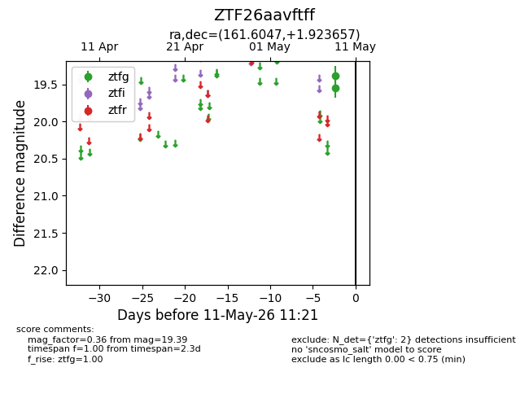
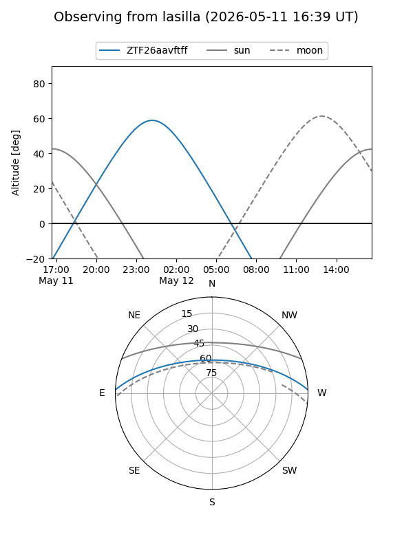
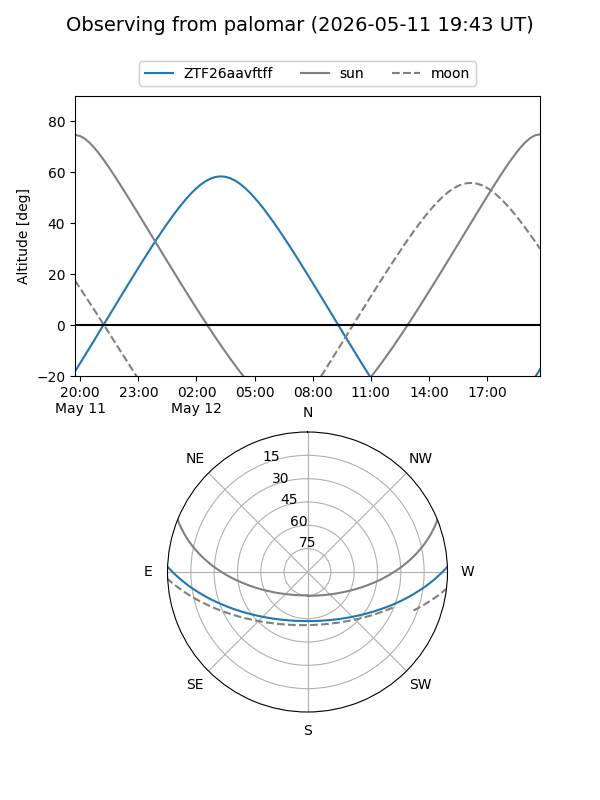

ZTF26aavftff
Target ZTF26aavftff at 2026-05-11 11:24
Aliases and brokers:
FINK: link
Lasair: link
ALeRCE: link
alt names
ZTF26aavftff (ztf,fink_ztf)
Coordinates:
equatorial (ra, dec) = 161.6047,+1.92366
equatorial (HMS+DMS) = 10:46:25.13,+01:55:25.16
galactic (l, b) = (247.6804,+50.86859)
Flags:
Photometry:
last ztfg=19.39
2 ztfg detections
Lightcurve

Visibility


Additional plots